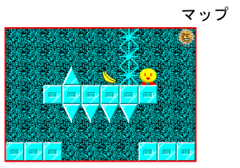
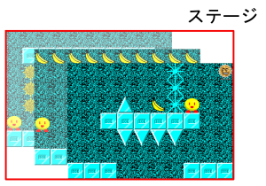

Windows XPで起動できない
対応環境はWindows 7以降です。
動作確認しているのは10と11だけなので、できればこれらを用意してください。
思った高さに飛べない
ジャンプキーを押す時間が短いほど高く飛びます。
一瞬で離すと3マス上まで飛ぶ大ジャンプ、1.5秒以内だと2マス上まで飛ぶ中ジャンプ、3秒以内だと1マスだけ飛ぶ小ジャンプです。
ゲームパッドには対応しないの？
簡単そうならやるかもしれませんが、今のところ予定はありません。
キーボードでプレイしてください。
画面がぼやけてる
できる範囲で対策はしましたが、WPFの仕組み上、どうしてもぼやけるときはぼやけます。
フル(中略)ゲームって何？
なんかふざけて肩書きをつけまくった。反省はしていない。
洞窟のステージの最後がブロックでふさがってる
古くより様々なゲームにおいて、越えられない壁を越えようとする試みが繰り返し為されてきました。
これもまた一つの成果です。
道は120度より鋭い角度にあります。
エンディングはないの？
あるじゃないですか。
「All Clear!」って出るやつ。
あれです。
カービィの影響？
基本的なゲーム性はSunflatさんのFlying Jump。
ほっとくと寝るとこはMt.New'sさんのむにゅ。もしかしたら名前もかも。
続編やほかのゲームも移植する予定はあるの？
ありません。これだけ特別です。
以前の実行ファイルは現在主流の環境で起動できず、それ以外にも公開を継続できない事情があったのですが、個人的に思い入れの深いゲームだったので、このゲームだけ作り直しました。
他のゲームは、いろいろ頑張れば今も動くので、今(2025年1月現在)のところ移植する気はありません。
「ステージ」と「マップ」の違いって？

マップは、ゲームを遊ぶうえで動き回れる一つの領域。
ここに散らばるバナナを集めます。

1以上のマップの集合からなる、ゲームの構成単位。
ステージファイル1つがステージ1つに対応します。
あの、ほんとに書き換えちゃっていいの？
いいよ。